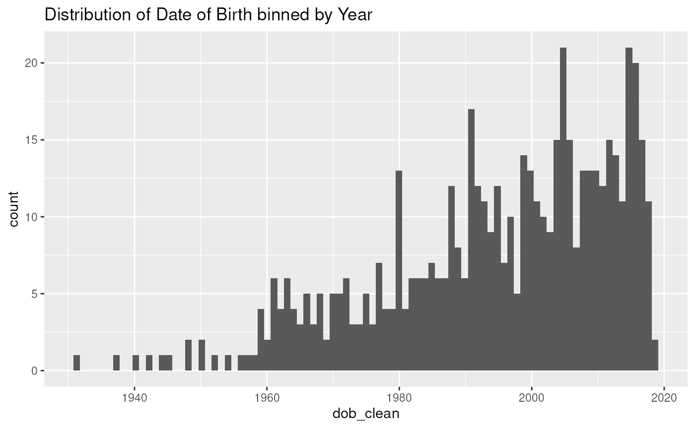
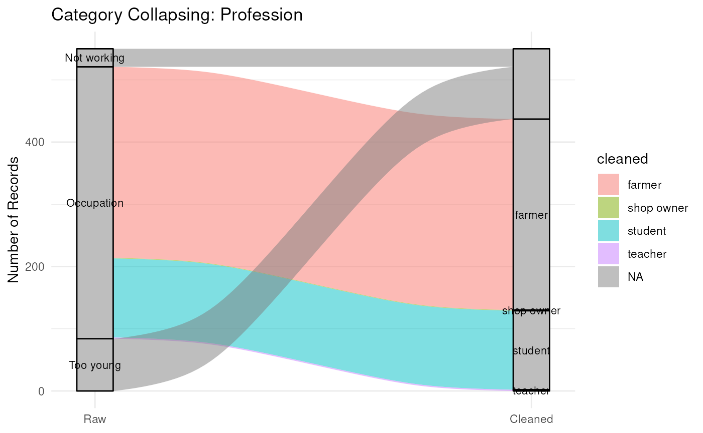
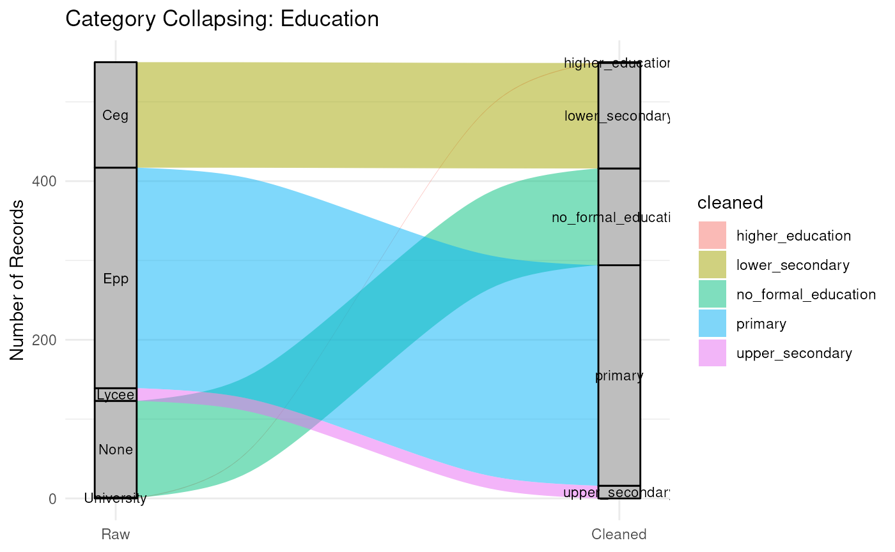

cohort-2018-preprocessing.Rmd
library(MAHERYCohortHarmonization)In this notebook, we’re exploring and preprocessing the 2018 data
from OpenSRP. The function will ultimately preprocess the data so that
it can be harmonized effectively with the other datasets. Importantly,
we use the column suffix _clean to denote that the column
has been cleaned and is being kept for analysis.
What is OpenSRP?
What is OpenSRP? It appears OpenSRP should cover year 2018. What is it and what does it survey? > Open SRP is a software to collect data. We collaborated with an Indonesian-based researchin 2018 that managed and stored our data. Their website does not exist anymore. That is the first platform we used for the ongoing health surveillance surveys. The data is stored in a flat file format.
Load the targets data for prototyping:
The OpenSRP file has a number of sheets:
library(here)
#> here() starts at /net/rcstorenfs02/ifs/rc_labs/dominici_lab/lab/data_processing/csph_MDG-SurveyHarmonization/MAHERYCohortHarmonization
library(targets)
tar_load(opensrp, store = here::here("_targets"))
tar_load(opensrp_dict, store = here::here("_targets"))
devtools::load_all()
#> ℹ Loading MAHERYCohortHarmonization
library(dplyr)
#>
#> Attaching package: 'dplyr'
#> The following object is masked from 'package:testthat':
#>
#> matches
#> The following objects are masked from 'package:stats':
#>
#> filter, lag
#> The following objects are masked from 'package:base':
#>
#> intersect, setdiff, setequal, union
library(stringr)
library(janitor)
#>
#> Attaching package: 'janitor'
#> The following objects are masked from 'package:stats':
#>
#> chisq.test, fisher.test
library(targets)
library(skimr)
#>
#> Attaching package: 'skimr'
#> The following object is masked from 'package:testthat':
#>
#> matches
library(forcats)
library(lubridate)
#>
#> Attaching package: 'lubridate'
#> The following objects are masked from 'package:base':
#>
#> date, intersect, setdiff, union
library(googledrive)
library(ggplot2)
library(ggalluvial)Importantly, there are a few “hierarchical levels” of data catalogued here.
Level 0: Household enrollment Level 1: Individuals in household Level 2: Antropometric data (every 3 months), dietary intake data collected from head of household (every 4 months), followup data
Although, for clarity, this should be named the opposite…?
Ultimately, a good idea might be to have it such that the most granular level is an individual, the next level up is their household. But we can solve for that later.
A function for plotting the mapping of categorical variables from raw
to clean, see audit_categorical_cleaning().
We’re told that the Open census sheet is the baseline. This should be the most granular level of individual data.
open_census <- opensrp$`Open census`
summary(open_census)
#> User Id Hh Head Name Id Member
#> Length:550 Length:550 Length:550 Length:550
#> Class :character Class :character Class :character Class :character
#> Mode :character Mode :character Mode :character Mode :character
#> Name Family Member Date Census Dob Actual Dob Date
#> Length:550 Length:550 Length:550 Length:550
#> Class :character Class :character Class :character Class :character
#> Mode :character Mode :character Mode :character Mode :character
#> Dob Month Dob Year Ethnic Group Other Ethnic Group
#> Length:550 Length:550 Length:550 Length:550
#> Class :character Class :character Class :character Class :character
#> Mode :character Mode :character Mode :character Mode :character
#> Sex Education Profession Profession Choices
#> Length:550 Length:550 Length:550 Length:550
#> Class :character Class :character Class :character Class :character
#> Mode :character Mode :character Mode :character Mode :character
#> Other Profession Marital Status Prior Health Care Prior Diagnosis
#> Length:550 Length:550 Length:550 Length:550
#> Class :character Class :character Class :character Class :character
#> Mode :character Mode :character Mode :character Mode :character
#> Other Prior Diagnosis Visual Health Deformities
#> Length:550 Length:550
#> Class :character Class :character
#> Mode :character Mode :character
#> Other Visual Health Deformities Surgeries Prior Surgeries
#> Length:550 Length:550 Length:550
#> Class :character Class :character Class :character
#> Mode :character Mode :character Mode :character
#> Vaccine Card Vaccination History Vaccine Other Pregnant
#> Length:550 Length:550 Length:550 Length:550
#> Class :character Class :character Class :character Class :character
#> Mode :character Mode :character Mode :character Mode :character
#> Pregnancies Number Deliveries Number Live Births Birthweight
#> Length:550 Length:550 Length:550 Length:550
#> Class :character Class :character Class :character Class :character
#> Mode :character Mode :character Mode :character Mode :character
#> Birthweight Gram Is Person Alive Cause Of Death Date Of Death
#> Length:550 Length:550 Mode:logical Mode:logical
#> Class :character Class :character NA's:550 NA's:550
#> Mode :character Mode :character
#> Death Date Deathmonth Deathyear Enum Note
#> Mode:logical Length:550 Length:550 Length:550
#> NA's:550 Class :character Class :character Class :character
#> Mode :character Mode :character Mode :character
#> Enum Comment Submission Date Is Closed
#> Length:550 Length:550 Length:550
#> Class :character Class :character Class :character
#> Mode :character Mode :character Mode :character
#> Client Version Submission Date Server Version Submission Date
#> Length:550 Length:550
#> Class :character Class :character
#> Mode :character Mode :character
skimr::skim(open_census)| Name | open_census |
| Number of rows | 550 |
| Number of columns | 46 |
| _______________________ | |
| Column type frequency: | |
| character | 43 |
| logical | 3 |
| ________________________ | |
| Group variables | None |
Variable type: character
| skim_variable | n_missing | complete_rate | min | max | empty | n_unique | whitespace |
|---|---|---|---|---|---|---|---|
| User Id | 0 | 1.00 | 11 | 11 | 0 | 2 | 0 |
| Hh Head Name | 0 | 1.00 | 4 | 26 | 0 | 134 | 0 |
| Id | 0 | 1.00 | 32 | 36 | 0 | 136 | 0 |
| Member | 0 | 1.00 | 36 | 36 | 0 | 550 | 0 |
| Name Family Member | 0 | 1.00 | 3 | 39 | 0 | 536 | 0 |
| Date Census | 0 | 1.00 | 10 | 10 | 0 | 38 | 0 |
| Dob Actual | 0 | 1.00 | 2 | 3 | 0 | 2 | 0 |
| Dob Date | 0 | 1.00 | 1 | 3 | 0 | 31 | 0 |
| Dob Month | 2 | 1.00 | 1 | 9 | 0 | 25 | 0 |
| Dob Year | 0 | 1.00 | 3 | 4 | 0 | 75 | 0 |
| Ethnic Group | 0 | 1.00 | 8 | 18 | 0 | 4 | 0 |
| Other Ethnic Group | 548 | 0.00 | 8 | 15 | 0 | 2 | 0 |
| Sex | 0 | 1.00 | 4 | 6 | 0 | 2 | 0 |
| Education | 0 | 1.00 | 3 | 10 | 0 | 5 | 0 |
| Profession | 0 | 1.00 | 9 | 11 | 0 | 3 | 0 |
| Profession Choices | 67 | 0.88 | 6 | 23 | 0 | 8 | 0 |
| Other Profession | 548 | 0.00 | 13 | 21 | 0 | 2 | 0 |
| Marital Status | 0 | 1.00 | 6 | 8 | 0 | 4 | 0 |
| Prior Health Care | 314 | 0.43 | 2 | 3 | 0 | 2 | 0 |
| Prior Diagnosis | 467 | 0.15 | 3 | 36 | 0 | 11 | 0 |
| Other Prior Diagnosis | 514 | 0.07 | 3 | 20 | 0 | 19 | 0 |
| Visual Health Deformities | 309 | 0.44 | 8 | 31 | 0 | 7 | 0 |
| Other Visual Health Deformities | 545 | 0.01 | 6 | 25 | 0 | 5 | 0 |
| Surgeries | 0 | 1.00 | 1 | 3 | 0 | 3 | 0 |
| Prior Surgeries | 538 | 0.02 | 1 | 52 | 0 | 12 | 0 |
| Vaccine Card | 0 | 1.00 | 2 | 3 | 0 | 3 | 0 |
| Vaccination History | 142 | 0.74 | 5 | 36 | 0 | 14 | 0 |
| Vaccine Other | 232 | 0.58 | 1 | 9 | 0 | 3 | 0 |
| Pregnant | 320 | 0.42 | 2 | 3 | 0 | 2 | 0 |
| Pregnancies | 418 | 0.24 | 1 | 2 | 0 | 13 | 0 |
| Number Deliveries | 419 | 0.24 | 1 | 2 | 0 | 13 | 0 |
| Number Live Births | 420 | 0.24 | 1 | 2 | 0 | 11 | 0 |
| Birthweight | 180 | 0.67 | 14 | 17 | 0 | 2 | 0 |
| Birthweight Gram | 502 | 0.09 | 4 | 4 | 0 | 15 | 0 |
| Is Person Alive | 0 | 1.00 | 3 | 3 | 0 | 1 | 0 |
| Deathmonth | 236 | 0.57 | 1 | 1 | 0 | 1 | 0 |
| Deathyear | 236 | 0.57 | 1 | 1 | 0 | 1 | 0 |
| Enum Note | 0 | 1.00 | 1 | 3 | 0 | 3 | 0 |
| Enum Comment | 235 | 0.57 | 1 | 60 | 0 | 2 | 0 |
| Submission Date | 0 | 1.00 | 10 | 10 | 0 | 25 | 0 |
| Is Closed | 0 | 1.00 | 5 | 5 | 0 | 1 | 0 |
| Client Version Submission Date | 0 | 1.00 | 19 | 19 | 0 | 544 | 0 |
| Server Version Submission Date | 0 | 1.00 | 19 | 19 | 0 | 453 | 0 |
Variable type: logical
| skim_variable | n_missing | complete_rate | mean | count |
|---|---|---|---|---|
| Cause Of Death | 550 | 0 | NaN | : |
| Date Of Death | 550 | 0 | NaN | : |
| Death Date | 550 | 0 | NaN | : |
We’ll start by using janitor to clean the column names.
open_census_ <- janitor::clean_names(open_census)What is user ID?
We only have two unique values for this. The values themselves are just a region in Madagascar. So we can leave this column as a factor.
Next, hh_head_name. This is supposedly the name of the
head of household.
We have 134 unique HHs. But, we can see that there are some weird
anomalies here. For example, some entries have commas and extra spaces.
We can clean this up with str_squish and
str_remove_all.
open_census_ %>%
mutate(hh_head_name_clean = hh_head_name %>%
str_to_lower() %>%
str_squish() %>%
str_remove_all(",")
) -> open_census_The number of unique entries stays the same, so this is encouraging.
Next, we look at the name_family_member column. This is
the name of the household member, ideally the most granular observation
in the dataset.
Some must be duplicated, so let’s find those:
open_census_ %>%
group_by(name_family_member, hh_head_name) %>%
summarise(n = n()) %>%
filter(n > 1) %>%
arrange(desc(n)) -> dups
#> `summarise()` has grouped output by 'name_family_member'. You can override
#> using the `.groups` argument.
open_census_ %>%
filter(name_family_member %in% dups$name_family_member) %>% arrange(name_family_member) -> multi_namesThere are a number of people who are listed as the same name, but with different IDs or member codes.
open_census_ %>%
mutate(name_family_member_clean = name_family_member %>%
str_to_lower() %>%
str_squish() %>%
str_remove_all(",")
) -> open_census_This will be dealt with when we create unique IDs below.
Next is date of birth. This is coded pretty weird, but we have a
column called dob_actual which might tell us if it is a
valid DoB row.
We should check to make sure that everyone has at least one
yes to this column:
open_census_ %>%
filter(dob_actual == "Yes") %>%
pull(name_family_member) %>%
unique() %>% length()
#> [1] 317So there are some people who do not have a DoB actual. Let’s do our best to form DoBs from the columns anyway, and see how that goes. Importantly, there are cases where the month is coded as ‘month idr’. Here’s a chatgpt response to that:
This abbreviation may have been derived from “I don’t remember” in English, either directly or influenced by informal bilingual usage, especially in multilingual communities where French and some English are spoken.
I think we can safely assume that this is the case, and as long as
the year is valid, we can make an assumption and place their DoB as
January 1st of that year (we’ll flag these though as
dob_estimated).
Below is the function that makes our DoBs:
Let’s see the effect of this mutation:
open_census_ %>%
clean_opencensus_dob() -> open_census_
#> Warning: There was 1 warning in `mutate()`.
#> ℹ In argument: `dob_clean = `%>%`(...)`.
#> Caused by warning:
#> ! 7 failed to parse.We lose 7 rows in the process.
open_census_ %>%
filter(is.na(dob_clean))
#> # A tibble: 7 × 53
#> user_id hh_head_name id member name_family_member date_census dob_actual
#> <chr> <chr> <chr> <chr> <chr> <chr> <chr>
#> 1 Antaravat… Delore 2fa5… 35528… Salaiga 2017-12-04 No
#> 2 Antaravat… Jacky jean … A298… Cee1e… Jacky jean claude 2017-07-10 No
#> 3 Antaravat… Moratombo f… 8f3a… 54cad… Maoratombo 2018-05-06 No
#> 4 Antaravat… Rabe arsel E7f3… E553b… Angelica 2018-04-07 No
#> 5 Antaravat… Radison 0c0a… 3c8a5… Razafinjafitsara … 2017-12-06 No
#> 6 Antaravat… Raherimanan… Ffbb… 39d71… Raherimanana jean… 2017-12-12 Yes
#> 7 Antaravat… Razanatiana… 70c6… D3a5d… Beterezineolizina 2017-12-04 No
#> # ℹ 46 more variables: dob_date <chr>, dob_month <chr>, dob_year <chr>,
#> # ethnic_group <chr>, other_ethnic_group <chr>, sex <chr>, education <chr>,
#> # profession <chr>, profession_choices <chr>, other_profession <chr>,
#> # marital_status <chr>, prior_health_care <chr>, prior_diagnosis <chr>,
#> # other_prior_diagnosis <chr>, visual_health_deformities <chr>,
#> # other_visual_health_deformities <chr>, surgeries <chr>,
#> # prior_surgeries <chr>, vaccine_card <chr>, vaccination_history <chr>, …One of them is coded as a leap year in 1997 (impossible). What’s
interesting is that the dob_actual value is “Yes”, so this
is definitely strange. Four of them have 999 (NA) as their year, so we
can’t do anything about that. The remaining 2 have NA in the month, so
we cannot use them.
open_census_ %>%
select(dob_actual, dob_estimated) %>%
table()
#> dob_estimated
#> dob_actual FALSE TRUE
#> No 0 226
#> Yes 270 54There were 54 cases where DoB was estimated but the original column said that it was actual. I wonder how these got encoded that way then?
open_census_ %>%
filter(dob_actual == "Yes" & dob_estimated == TRUE)
#> # A tibble: 54 × 53
#> user_id hh_head_name id member name_family_member date_census dob_actual
#> <chr> <chr> <chr> <chr> <chr> <chr> <chr>
#> 1 Antarava… Avelice 6fb7… E25c3… Avelice 2017-12-12 Yes
#> 2 Antarava… Be alphonse 3165… 0fc5d… Be alphonse 2017-12-07 Yes
#> 3 Antarava… Be alphonse 3165… 1495a… Razafindraranto o… 2017-12-07 Yes
#> 4 Antarava… Be angenica A469… 9a1ae… Be angenica 2017-12-02 Yes
#> 5 Antarava… Be razakand… Ac86… Ebaee… Alphine 2017-12-05 Yes
#> 6 Antarava… Be rolin ii 497e… 2c047… Be rolin ii 2017-12-08 Yes
#> 7 Antarava… Be zela 2077… A4533… Be zela 2017-12-14 Yes
#> 8 Antarava… Be zela 2077… F680e… Jumela 2017-12-14 Yes
#> 9 Antarava… Benosy raph… 3340… 7d0ad… Judianot 2017-12-11 Yes
#> 10 Antarava… Besargene 456d… 93485… Miscanah 2017-12-06 Yes
#> # ℹ 44 more rows
#> # ℹ 46 more variables: dob_date <chr>, dob_month <chr>, dob_year <chr>,
#> # ethnic_group <chr>, other_ethnic_group <chr>, sex <chr>, education <chr>,
#> # profession <chr>, profession_choices <chr>, other_profession <chr>,
#> # marital_status <chr>, prior_health_care <chr>, prior_diagnosis <chr>,
#> # other_prior_diagnosis <chr>, visual_health_deformities <chr>,
#> # other_visual_health_deformities <chr>, surgeries <chr>, …What is the distribution of DoB?
library(ggplot2)
min_year <- min(open_census_$dob_clean,na.rm = T) %>% year()
max_year <- max(open_census_$dob_clean,na.rm = T) %>% year()
open_census_ %>%
ggplot(aes(x = dob_clean)) +
geom_histogram(bins = length(min_year:max_year)) + # one bin per year
scale_x_date(date_labels = "%Y") +
ggtitle("Distribution of Date of Birth binned by Year")
#> Warning: Removed 7 rows containing non-finite outside the scale range
#> (`stat_bin()`).
We can move on with the other variables.
We can process ethnic group next:
open_census_$ethnic_group %>% table()
#> .
#> Betsileo Betsimisaraka Ethnic group other Tsimihety
#> 12 526 2 10I think we can collapse these into a single column.
open_census_ %>%
mutate(ethnicity_clean =
case_when(
is.na(ethnic_group) ~ other_ethnic_group,
ethnic_group == "Ethnic group other" ~ other_ethnic_group,
.default = ethnic_group
) %>% str_to_lower() %>% as_factor()
) -> open_census_
open_census_$ethnicity %>% table()
#> Warning: Unknown or uninitialised column: `ethnicity`.
#> < table of extent 0 >The recoding of education is done like so:
open_census_ %>%
recode_opensrp_education() -> open_census_
open_census_$education_level_clean %>% table()
#> .
#> no_formal_education primary lower_secondary upper_secondary
#> 122 278 133 16
#> higher_education
#> 1I think we can comfortably collapse profession
open_census_ %>%
select(matches('^profession*')) %>%
table()
#> profession_choices
#> profession Farmer Farmer profession other Farmer shop owner Farmer teacher
#> Not working 0 0 0 0
#> Occupation 300 2 3 2
#> Too young 0 0 0 0
#> profession_choices
#> profession Profession na Shop owner Student Teacher
#> Not working 12 0 0 0
#> Occupation 0 1 127 2
#> Too young 34 0 0 0We can classify employment with the following:
“Employment status is classified following ILO and DHIS2 recommendations: distinguishing Employed, Unemployed, Inactive (students, homemakers, retirees, disabled), Not applicable (persons below minimum working age), and Unknown.”
We have a column other_profession which currently only
only has two outstanding entries: commitionaire and
Zaza loatra tsy miasa. The latter means “too young,” and
the former likely means “Small vendor / commission agent”. Hence, we can
remove the latter and assign the former to vendor. I
believe we can combine that with the option
Farmer shop owner in the other column too.
First, we classify employment, and then formalize the profession choices.
open_census_ %>%
mutate(employment_status_clean =
case_when(
str_to_lower(profession) == "not working" ~ "inactive",
str_to_lower(profession) == "occupation" ~ "employed",
str_to_lower(profession) == "too young" ~ "not applicable",
TRUE ~ NA_character_
)
) %>%
mutate(
profession_clean = case_when(
str_detect(str_to_lower(profession_choices), "farmer") ~ "farmer",
str_detect(str_to_lower(profession_choices), "shop owner") ~ "shop owner",
str_detect(str_to_lower(profession_choices), "teacher") ~ "teacher",
str_detect(str_to_lower(profession_choices), "student") ~ "student",
TRUE ~ NA_character_
)
) -> open_census_This should be a fairly simple one:
open_census_ %>%
select(marital_status) %>%
table()
#> marital_status
#> Divorced Married Single Widowed
#> 3 241 299 7We can leave it as is.
open_census_ %>%
mutate(marital_status_clean = marital_status %>% str_to_lower() %>% as_factor()) -> open_census_Leave as is:
This one is a bit more complicated. We have a number of columns for healthcare.
open_census_ %>%
select(prior_health_care:deathyear) %>%
mutate(across(everything(), ~ as.factor(.))) %>%
summary()
#> prior_health_care prior_diagnosis other_prior_diagnosis
#> No :163 Malaria : 34 999 : 8
#> Yes : 73 Prior diagnosis other: 21 Solopiso : 6
#> NA's:314 Hypertension : 13 Aretintsofina: 2
#> No pregnancy : 5 Farasisa : 2
#> Idr : 2 Hernie : 2
#> (Other) : 8 (Other) : 16
#> NA's :467 NA's :514
#> visual_health_deformities other_visual_health_deformities
#> Deformities na :226 Balana : 1
#> Missing teeth : 6 Kondohalitry, moa : 1
#> Other deformities: 4 Malemy tongotra sy tanana: 1
#> Club foot : 2 Simba maso ilany : 1
#> Albinism : 1 Tongotra : 1
#> (Other) : 2 NA's :545
#> NA's :309
#> surgeries prior_surgeries vaccine_card
#> - :314 & : 1 Idk: 17
#> No :227 Nanala aretina apandisite : 1 No :377
#> Yes: 9 Niterak nodidiana : 1 Yes:156
#> Niteraka zaza iray dia nididiana: 1
#> Operation maso : 1
#> (Other) : 7
#> NA's :538
#> vaccination_history vaccine_other pregnant
#> Measles polio :165 - :314 No : 98
#> Vacc idr :144 Tsy misy: 3 Yes :132
#> Polio dtc1 dtc2 dtc3 measles : 42 Tsy nisy : 1 NA's:320
#> Polio dtc1 dtc2 dtc3 measles tetanus: 28 NA's :232
#> Polio : 6
#> (Other) : 23
#> NA's :142
#> pregnancies number_deliveries number_live_births birthweight
#> 2 : 31 1 : 31 1 : 35 Birth weight gram: 48
#> 1 : 28 2 : 28 2 : 28 Birthweight na :322
#> 3 : 22 3 : 22 3 : 20 NA's :180
#> 4 : 12 4 : 12 4 : 14
#> 5 : 11 5 : 11 5 : 13
#> (Other): 28 (Other): 27 (Other): 20
#> NA's :418 NA's :419 NA's :420
#> birthweight_gram is_person_alive cause_of_death date_of_death death_date
#> 3000 : 10 Yes:550 NA's:550 NA's:550 NA's:550
#> 2500 : 6
#> 2800 : 5
#> 2000 : 4
#> 3500 : 4
#> (Other): 19
#> NA's :502
#> deathmonth deathyear
#> - :314 - :314
#> NA's:236 NA's:236
#>
#>
#>
#>
#> To be honest, I think that healthcare should be in a separate table in our outputs. It seems to sparse and complex to be useful in the main table.
So with that, let’s summarize what we have so far:
In this notebook, we have investigated the data and taken the following steps to harmonize the cohort from the OpenSRP_2018 baseline file “Open Census”:
janitor
antaravato is a village in Madagascar
represented by the user ID columnHere’s a visual summary using our
audit_categorical_cleaning function:
open_census_ %>%
audit_categorical_cleaning(
raw_col = hh_head_name,
cleaned_col = hh_head_name_clean,
var_name = "Household Head Name", plot = FALSE
)
#>
#> === Mapping Table for: Household Head Name ===
#> # A tibble: 134 × 3
#> raw cleaned n
#> <chr> <chr> <int>
#> 1 Be zela be zela 10
#> 2 Bezafy romain bezafy romain 9
#> 3 Bilina victor bilina victor 9
#> 4 Tsidinesana tsidinesana 9
#> 5 Clerien clerien 8
#> 6 Eddy eddy 8
#> 7 Rakoto elois rakoto elois 8
#> 8 Daniel tsaramaro daniel tsaramaro 7
#> 9 Derisy derisy 7
#> 10 Pierreson pierreson 7
#> # ℹ 124 more rows
open_census_ %>%
audit_categorical_cleaning(
raw_col = profession,
cleaned_col = profession_clean,
var_name = "Profession", plot = TRUE
)
#>
#> === Mapping Table for: Profession ===
#> # A tibble: 6 × 3
#> raw cleaned n
#> <chr> <chr> <int>
#> 1 Occupation farmer 307
#> 2 Occupation student 127
#> 3 Too young NA 84
#> 4 Not working NA 29
#> 5 Occupation teacher 2
#> 6 Occupation shop owner 1
open_census_ %>%
audit_categorical_cleaning(
raw_col = education,
cleaned_col = education_level_clean,
var_name = "Education", plot = TRUE
)
#>
#> === Mapping Table for: Education ===
#> # A tibble: 5 × 3
#> raw cleaned n
#> <chr> <chr> <int>
#> 1 Epp primary 278
#> 2 Ceg lower_secondary 133
#> 3 None no_formal_education 122
#> 4 Lycee upper_secondary 16
#> 5 University higher_education 1
We can wrap that up in the preprocess_opensrp2018()
function.
As a final step, we’re also going to generate the UUID for each
individual. This is important for the final output, as we will be using
this to merge with the other datasets. The previous method of creating a
UUID was to paste a few variables, but this is not ideal as it can lead
to duplicates as well as security issues. To ensure security, we’ll use
the digest package and a secure salt. The
salt will be stored in the R environment as a secret variable.
generate_uid(salt = "cohort_secret", "John", "Doe", "1990-01-01")
#> [1] "051bd1"There is a case where there are two households heads with the same
name Eddy. After examining these, we determined that they
can be separated by the date that they were registered. We will
therefore denote them numeric suffixes (I) and (II), and have this also
reflect in their respective Head of Household registration table. This
strategy may not work for all future cases, but for now, it is a good
solution for these two individuals.
The final function will take the Open Census data and run it through the pipeline we have created.
preprocess_opensrp2018(open_census) %>% summary()
#> Warning: There was 1 warning in `mutate()`.
#> ℹ In argument: `dob_clean = `%>%`(...)`.
#> Caused by warning:
#> ! 7 failed to parse.
#> uuid village hh_head_name name
#> Length:550 Length:550 Length:550 Length:550
#> Class :character Class :character Class :character Class :character
#> Mode :character Mode :character Mode :character Mode :character
#>
#>
#>
#>
#> dob ethnicity education_level
#> Min. :1930-12-24 betsimisaraka :526 no_formal_education:122
#> 1st Qu.:1984-01-01 tsimihety : 10 primary :278
#> Median :1998-10-26 metisy betsileo: 1 lower_secondary :133
#> Mean :1994-10-05 betsileo : 12 upper_secondary : 16
#> 3rd Qu.:2008-12-20 sihanaka : 1 higher_education : 1
#> Max. :2018-05-05
#> NA's :7
#> employment_status profession marital_status sex
#> employed :437 farmer :307 single :299 female:280
#> inactive : 29 shop owner: 1 married :241 male :270
#> not applicable: 84 student :127 divorced: 3
#> teacher : 2 widowed : 7
#> NA's :113
#>
#>
#> submission_date
#> Min. :2017-07-25
#> 1st Qu.:2017-07-31
#> Median :2017-08-02
#> Mean :2017-10-16
#> 3rd Qu.:2018-01-17
#> Max. :2018-05-12
#>